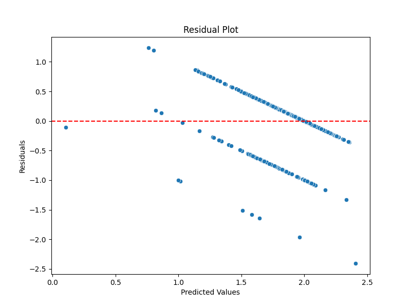
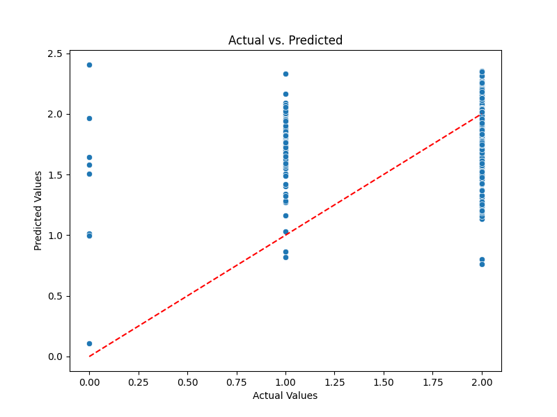
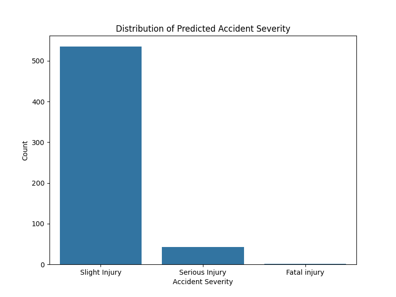

<h1>Road Accident Severity Analysis</h1><h2>Mean Squared Error: 0.15896081082243044</h2><h2>Predicted Accident Severity: Slight Injury</h2><h2>Visualizations</h2><h3>Residual Plot</h3><h3>Actual vs. Predicted Plot</h3><h3>Predicted Severity Distribution</h3>